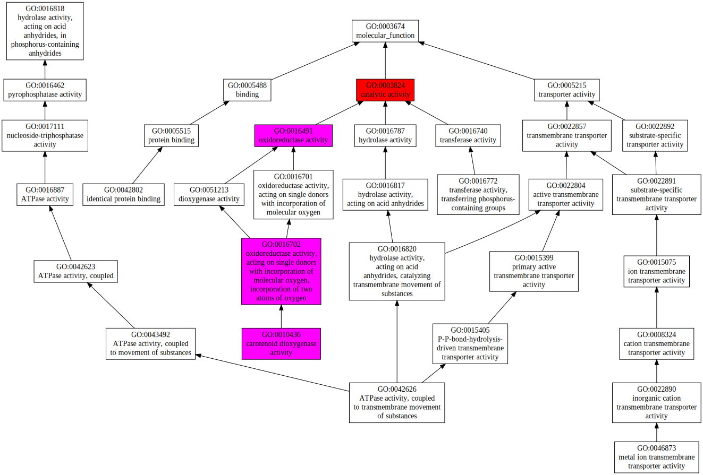
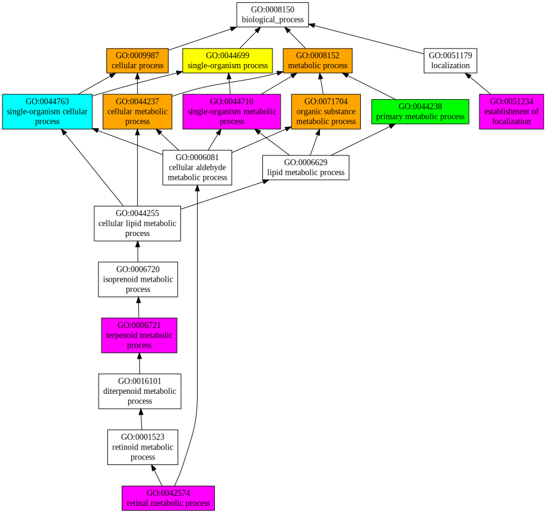

|

|
| GO term | CscoreGO | Name |
| GO:0003824 | 0.99 | catalytic activity |
| GO:0016491 | 0.49 | oxidoreductase activity |
| GO:0016702 | 0.31 | oxidoreductase activity, acting on single donors with incorporation of molecular oxygen, incorporation of two atoms of oxygen |
| GO:0010436 | 0.30 | carotenoid dioxygenase activity |
| GO:0016740 | 0.03 | transferase activity |
| GO:0022857 | 0.02 | transmembrane transporter activity |
| GO:0016772 | 0.02 | transferase activity, transferring phosphorus-containing groups |
| GO:0046873 | 0.01 | metal ion transmembrane transporter activity |
| GO:0042802 | 0.01 | identical protein binding |
| GO:0042626 | 0.01 | ATPase activity, coupled to transmembrane movement of substances |
| Download full result of the above consensus prediction. |
| Click the graph to show a high resolution version. |
| (a) | CscoreGO is the confidence score of predicted GO terms. CscoreGO values range in between [0-1]; where a higher value indicates a better confidence in predicting the function using the template. |
| (b) | The graph shows the predicted terms within the Gene Ontology hierachy for Molecular Function. Confidently predicted terms are color coded by CscoreGO: |
| | [0.13,0.5) | [0.5,0.6) | [0.6,0.7) | [0.7,0.8) | [0.8,0.9) | [0.9,1.0] |
|
|
|

|
| Download full result of the above consensus prediction. |
| Click the graph to show a high resolution version. |
| (a) | CscoreGO is the confidence score of predicted GO terms. CscoreGO values range in between [0-1]; where a higher value indicates a better confidence in predicting the function using the template. |
| (b) | The graph shows the predicted terms within the Gene Ontology hierachy for Biological Process. Confidently predicted terms are color coded by CscoreGO: |
| | [0.08,0.5) | [0.5,0.6) | [0.6,0.7) | [0.7,0.8) | [0.8,0.9) | [0.9,1.0] |
|
|

|
| Download full result of the above consensus prediction. |
| Click the graph to show a high resolution version. |
| (a) | CscoreGO is the confidence score of predicted GO terms. CscoreGO values range in between [0-1]; where a higher value indicates a better confidence in predicting the function using the template. |
| (b) | The graph shows the predicted terms within the Gene Ontology hierachy for Cellular Component. Confidently predicted terms are color coded by CscoreGO: |
| | [0.14,0.5) | [0.5,0.6) | [0.6,0.7) | [0.7,0.8) | [0.8,0.9) | [0.9,1.0] |
|
|
|